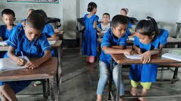
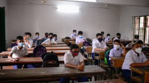

Eden International School & College, Meradia Khilgaon
🎓 শিক্ষা কার্যক্রম (Academic Program)
ইডেন ইন্টারন্যাশনাল স্কুল অ্যান্ড কলেজ–এ শিক্ষা কার্যক্রম পরিচালিত হয় দুটি পৃথক শিফটে —
মর্নিং শিফট ও ডে শিফট।
এই ব্যবস্থা শিক্ষার্থীদের জন্য আরও উপযোগী, ঝামেলাহীন ও সুশৃঙ্খল একাডেমিক পরিবেশ নিশ্চিত করে।
ডে শিফটে উচ্চ শ্রেণির শিক্ষার্থীদের জন্য একটি গভীর মনোযোগ ও পাঠ-অনুশীলনভিত্তিক পাঠদান ব্যবস্থা চালু আছে। সৃজনশীল প্রশ্নের উত্তর, বিজ্ঞানাগার চর্চা, গাণিতিক দক্ষতা ও ভাষাগত উন্নয়নে বিশেষ জোর দেওয়া হয়। শ্রেণি পরিচালনা করেন অভিজ্ঞ শিক্ষকবৃন্দ, যারা শিক্ষার্থীদের প্রতিভা ও ভবিষ্যৎ নেতৃত্ব গঠনে আন্তরিক।
📌 একাডেমিক বৈশিষ্ট্য:
✔️ পৃথক শিফটে পাঠদান করে শিক্ষার্থীদের চাপ কমানো হয়
✔️ প্রতিটি শ্রেণিতে মনোযোগী পরিবেশ বজায় রাখতে ছোট ব্যাচ রাখা হয়
✔️ সময়মতো শ্রেণি শুরু ও শেষ — নিয়মানুবর্তিতা শিক্ষার অন্যতম ভিত্তি
✔️ নিয়মিত পরীক্ষা ও মূল্যায়নের মাধ্যমে শিক্ষার অগ্রগতি পর্যবেক্ষণ
✔️ শিশুদের মানসিক ও নৈতিক বিকাশে সহশিক্ষা কার্যক্রম
🎯 আমাদের একমাত্র লক্ষ্য:
“সময়মতো শ্রেণি, মানসম্পন্ন পাঠদান, সুশৃঙ্খল পরিবেশ — শিক্ষার্থীদের ভবিষ্যৎ গড়ার নির্ভরযোগ্য প্রতিষ্ঠান হিসেবে নিজেদের প্রতিষ্ঠা করা।”
প্রতিটি শিফটে শিক্ষার্থীদের পাঠদান করেন অভিজ্ঞ ও আন্তরিক শিক্ষকবৃন্দ। একাডেমিক ক্যালেন্ডার অনুযায়ী সাপ্তাহিক, মাসিক, অর্ধবার্ষিক ও বার্ষিক মূল্যায়নের মাধ্যমে শিক্ষার্থীদের উন্নয়ন পর্যবেক্ষণ করা হয়।
🎓 একাডেমিক বিভাগসমূহ (Academic Streams)
ইডেন ইন্টারন্যাশনাল স্কুল অ্যান্ড কলেজে মাধ্যমিক স্তরে শিক্ষার্থীদের জন্য রয়েছে তিনটি আলাদা বিভাগ: বিজ্ঞান (Science), ব্যবসায় শিক্ষা (Commerce), ও মানবিক (Arts)। প্রতিটি বিভাগই দক্ষ শিক্ষক দ্বারা পরিচালিত হয় এবং ছাত্রছাত্রীদের ভবিষ্যতের প্রস্তুতির জন্য আধুনিক পাঠদান পদ্ধতি অনুসরণ করা হয়।
🧪 বিজ্ঞান বিভাগ (Science)
"যারা স্বপ্ন দেখো চিকিৎসক, ইঞ্জিনিয়ার কিংবা বৈজ্ঞানিক হওয়ার, তাদের জন্য বিজ্ঞান বিভাগই প্রথম পদক্ষেপ।"
বিজ্ঞান বিভাগে রয়েছে পদার্থবিদ্যা, রসায়ন, জীববিজ্ঞান, উচ্চতর গণিত ও তথ্য প্রযুক্তি বিষয়।
বাস্তবভিত্তিক শিক্ষার জন্য রয়েছে ল্যাব সুবিধা।
শিক্ষার্থীদের বিজ্ঞানমুখী ভাবনা, বিশ্লেষণী ক্ষমতা ও সৃজনশীলতা বিকাশে সহায়ক।
মেডিকেল ও ইঞ্জিনিয়ারিং ভর্তি পরীক্ষার জন্য আলাদা প্রস্তুতির ব্যবস্থা রয়েছে।
💼 ব্যবসায় শিক্ষা বিভাগ (Commerce)
"ভবিষ্যতের উদ্যোক্তা, ব্যাংকার বা হিসাববিদ হতে চাইলে বেছে নিন ব্যবসায় শিক্ষা।"
হিসাববিজ্ঞান, ব্যবস্থাপনা, ফিন্যান্স ও ব্যাংকিং, ব্যবসায় সংগঠন বিষয়গুলো শেখানো হয়।
শিক্ষার্থীদের ব্যবসায়িক জ্ঞান ও দক্ষতা গড়ে তুলতে বাস্তবমুখী পাঠ্যক্রম অনুসরণ করা হয়।
ভবিষ্যতে BBA, MBA, ব্যাংকিং ও বিজনেস ফিল্ডে উচ্চশিক্ষার জন্য এটি উপযুক্ত বিভাগ।
📝 মানবিক বিভাগ (Arts)
"যারা হতে চাও শিক্ষক, সাংবাদিক, সাহিত্যিক কিংবা প্রশাসক—তাদের জন্য মানবিক বিভাগ সঠিক পথ।"
বিষয়সমূহ: বাংলা, ইংরেজি, ইতিহাস, ভূগোল, অর্থনীতি, পৌরনীতি ও সামাজিক বিজ্ঞান।
ভাষা, সাহিত্য ও সমাজবিজ্ঞানভিত্তিক চর্চার মাধ্যমে বিশ্লেষণী চিন্তাশক্তি বৃদ্ধি পায়।
B.A., M.A., সমাজকর্ম, আইন ও সাংবাদিকতার মতো উচ্চশিক্ষার সুযোগ সৃষ্টি হয়।
📚 শিক্ষাদান পদ্ধতি (Teaching Methods)
ইডেন ইন্টারন্যাশনাল স্কুল অ্যান্ড কলেজে পাঠদানের পদ্ধতি আধুনিক, সময়োপযোগী এবং শিক্ষার্থীবান্ধব। আমাদের লক্ষ্য শুধুমাত্র বইয়ের জ্ঞান নয়, বরং শিক্ষার্থীদের চিন্তাশক্তি, সৃজনশীলতা ও বাস্তবজ্ঞান উন্নয়ন করা।
✅ ১. ব্যাখ্যামূলক পাঠ (Interactive Lecture)
শিক্ষকরা পাঠ্যবইয়ের বিষয়বস্তু সহজ ও আকর্ষণীয়ভাবে ব্যাখ্যা করেন যাতে শিক্ষার্থীরা বিষয়টি গভীরভাবে বুঝতে পারে। শিক্ষার্থীদের প্রশ্ন করার সুযোগ দেওয়া হয় ক্লাসে।
✅ ২. অডিও-ভিজ্যুয়াল শিক্ষণ (Audio-Visual Learning)
ক্লাসে প্রজেক্টর ও ভিডিও উপস্থাপনার মাধ্যমে বিজ্ঞান, ভূগোল, ইতিহাসসহ নানা বিষয়ের চিত্রভিত্তিক ধারণা দেওয়া হয়, যাতে শিক্ষার্থীরা বাস্তব অভিজ্ঞতা পায়।
✅ ৩. গ্রুপ ও পেয়ার ওয়ার্ক (Group & Peer Activities)
শিক্ষার্থীরা দলগতভাবে কাজ করে ধারণা আদান-প্রদান করে। এতে নেতৃত্ব, সহমর্মিতা ও সামাজিক দক্ষতা গড়ে ওঠে।
✅ ৪. ক্লাস টেস্ট ও মূল্যায়ন (Regular Assessment)
নিয়মিত ক্লাস টেস্ট ও মূল্যায়নের মাধ্যমে শিক্ষার্থীদের অগ্রগতি পর্যবেক্ষণ করা হয় এবং দুর্বল জায়গাগুলো চিহ্নিত করে আলাদাভাবে গাইড করা হয়।
✅ ৫. ল্যাব-ভিত্তিক শিক্ষা (Practical Lab)
বিজ্ঞান বিভাগের জন্য রয়েছে আধুনিক ল্যাব সুবিধা, যেখানে হাতে-কলমে পরীক্ষা করার মাধ্যমে শিক্ষার্থীরা পাঠ্য বিষয় সহজে আয়ত্ত করতে পারে।
✅ ৭. প্রাইভেট কোচিং বিহীন প্রস্তুতি
স্কুলেই সম্পূর্ণ সিলেবাস কাভার করার জন্য অতিরিক্ত ক্লাস ও গাইডেন্স প্রদান করা হয় যাতে শিক্ষার্থীদের আলাদা কোচিংয়ের প্রয়োজন না পড়ে।
একাডেমিক কার্যক্রম


একটি শিক্ষাপ্রতিষ্ঠানের মূল ভিত্তি হলো এর একাডেমিক বা শিক্ষামূলক কার্যক্রম। আমাদের বিদ্যালয়ে একাডেমিক কার্যক্রম অত্যন্ত গুরুত্বের সাথে পরিচালিত হয় এবং এর প্রতিটি ধাপে মানসম্পন্ন শিক্ষা নিশ্চিত করার চেষ্টা করা হয়।
আমাদের একাডেমিক কাঠামো জাতীয় শিক্ষাক্রম ও পাঠ্যসূচির ভিত্তিতে গঠিত। প্রতিটি শ্রেণিতে পাঠদান হয় সুপরিকল্পিতভাবে এবং নির্ধারিত সময়ে পাঠ সমাপ্ত করার জন্য শিক্ষকদের একাডেমিক ক্যালেন্ডার অনুযায়ী কার্যক্রম পরিচালিত হয়।
শ্রেণিকক্ষ পাঠদান
প্রতিটি শ্রেণির জন্য নির্ধারিত পাঠ্যসূচি অনুযায়ী নিয়মিত ক্লাস পরিচালনা করা হয়। শিক্ষকগণ শুধুমাত্র বইয়ের পাঠেই সীমাবদ্ধ থাকেন না; বরং তারা বাস্তব উদাহরণ, মাল্টিমিডিয়া ও শিক্ষণীয় খেলাধুলার মাধ্যমে শিক্ষাকে জীবন্ত ও আনন্দদায়ক করে তোলেন।
পরীক্ষা ও মূল্যায়ন
প্রতিবছর বার্ষিক, অর্ধবার্ষিক ও মাসিক মূল্যায়ন ব্যবস্থা রয়েছে। প্রতিটি পরীক্ষার মাধ্যমে শিক্ষার্থীদের শেখার অগ্রগতি মূল্যায়ন করা হয় এবং অভিভাবকদের সঙ্গে সেই ফলাফল ভাগ করে নেওয়া হয়। পরীক্ষার ফলাফল বিশ্লেষণ করে প্রয়োজনীয় অ্যাকাডেমিক সহায়তা প্রদান করা হয়।
সহায়ক পাঠক্রমিক কার্যক্রম
একাডেমিক পড়াশোনার পাশাপাশি বিতর্ক, রচনা প্রতিযোগিতা, সাধারণ জ্ঞান, বিজ্ঞান মেলা, চিত্রাঙ্কন, সংস্কৃতিমূলক অনুষ্ঠান ইত্যাদির আয়োজন করা হয়। এসব কার্যক্রম শিক্ষার্থীদের জ্ঞান, মননশীলতা ও সৃজনশীলতা বিকাশে সহায়তা করে।
শিক্ষক প্রশিক্ষণ ও পর্যবেক্ষণ
শিক্ষার মান উন্নয়নের জন্য শিক্ষকগণকে আধুনিক পদ্ধতিতে প্রশিক্ষণ প্রদান করা হয়। প্রতি সপ্তাহে শিক্ষক বৈঠক ও ক্লাস পর্যবেক্ষণের মাধ্যমে শিক্ষার মান নিয়ন্ত্রণ করা হয়।
পরিচ্ছন্ন ও শান্তিপূর্ণ পরিবেশ
যদিও বিদ্যালয়টি জনবহুল এলাকায় অবস্থিত, তবুও আমরা শিক্ষার পরিবেশ যেন নিরবচ্ছিন্ন থাকে তা নিশ্চিত করি। শ্রেণিকক্ষ ও প্রাঙ্গণ সবসময় পরিষ্কার রাখা হয় এবং ছাত্র-ছাত্রীদের শৃঙ্খলা বজায় রাখতে উদ্বুদ্ধ করা হয়।
উপসংহার
আমরা বিশ্বাস করি, একটি সুগঠিত একাডেমিক কাঠামোই শিক্ষার্থীদের ভবিষ্যতের পথ দেখায়। আমাদের লক্ষ্য শুধুমাত্র ভালো ফল নয়, বরং একজন আদর্শ মানুষ হিসেবে গড়ে তোলার জন্য শিক্ষাকে নৈতিকতা, মূল্যবোধ ও বাস্তব জীবনের উপযোগী করে তোলা।